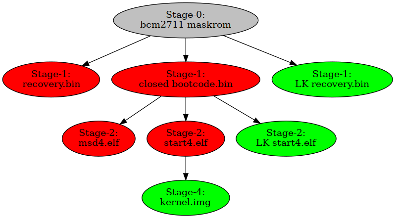

How the free and nonfree firmware work
Stages
These firmwares (especially the stock firmware) have steps called "stages".
On most Raspberry Pi boards, you have the following:
- Stage 0, loads Stage 1
- Stage 1, initialises the RAM and loads Stage 2
- Stage 2, initialises everything else and loads linux.
However, in the Raspberry Pi 4, it's a bit different:
Stage 0, loads Stage 1 * Stage 1, initialises the ram, network, etc.. and loads Stage 2 * Stage 2, initialises everything else and loads linux.

And in the Raspberry Pi 4 beta firmware, there's another stage and changes on Stage 1:
- Stage 0, loads Stage 1 ;
- Stage 1, initialises the ram and network, among other things and loads Stage 1.5,
bootcode.bin - Stage 1.5, initialises the network and usb, among other things and loads Stage 2
- Stage 2, initialises everything else and loads linux.
Boot flow and secure boot
See these notes.